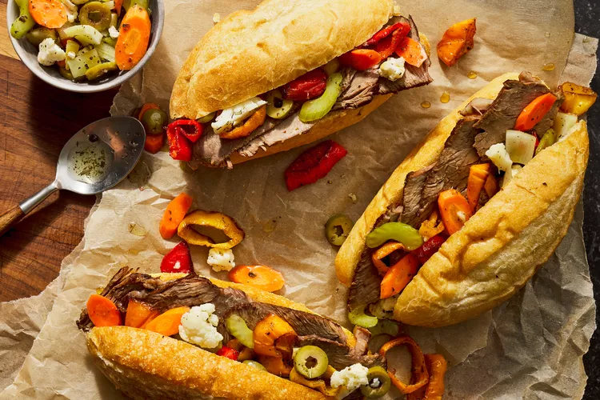

Italian beef sandwich Recipe

Describtion
Topped with bright homemade giardiniera and roasted sweet peppers,
these Italian beef sandwiches have lots of beefy flavor and a deeply satisfying jus.
Perfect Italian beef sandwiches don’t just happen overnight;
it’s a labor of love to make flawlessly tender roast beef and a deeply flavorful jus.
Our sandwich is topped with homemade giardiniera and roasted sweet peppers to bring savory,
bright, and sweet flavors all into balance.
Italian Beef Ingredients
- Beef(Oxtails and top sirloin roast)
- Olive Oil
- Beef Broth
- Seasoning(Salt, pepper, celery salt)
- Italian Seasoning
- Aromatics(Onion, fennel, celery, garlic)
- Crushed Red Pepper(Optional)
Giardiniera(Optional) Ingredients
- Vegetables(Carrots, celery, cauliflower, fennel)
- Olive Oil
- Vinegar
- Spices(Black peppercorns, Italian seasoning))
- Green Olives
- Garlic Cloves(Onion, fennel, celery, garlic)
Roasted Peppers (Optional) Ingredients
- Mini Peppers
- Olive Oil
- Seasoning(Celery salt, black pepper)
Go Back To The Main Menu